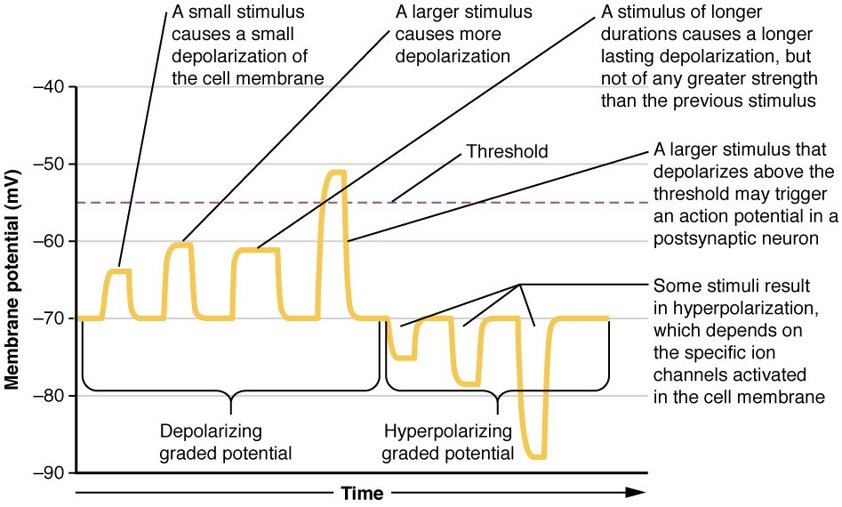

Why your lip goes numb at the dentist
Before filling a tooth, your dentist injects lidocaine near a nerve. Within minutes your lip feels thick and numb. The drill still presses on your tooth, and the nerve endings there still respond a little. But nothing reaches your brain, because lidocaine blocks the channels a nerve fiber needs to send an electrical message along its length. To see why, you need the difference between the two kinds of electrical change a cell can make: graded potentials and action potentials. This page covers the basics of graded potential vs action potential, the channels behind each, and how an action potential travels.
This is a short, general version. The nervous chapter covers the action potential of neurons in full, the muscle chapter shows how one starts a contraction, and the heart chapter shows the heart's longer version.
Excitable cells
Every cell has a resting membrane potential, but only some can use it to send a fast, long-distance electrical message. An excitable cell is a cell whose membrane can produce an action potential. Excitable comes from the Latin excitare, to rouse. The main excitable cells are:
- neurons
- muscle fibers: skeletal, cardiac and many smooth muscle cells
What makes them excitable is a special set of channels in their membrane: voltage-gated sodium and potassium channels. A skin cell or a red blood cell has a resting potential but lacks enough of these channels, so it cannot produce an action potential.
Graded potentials: small, local and variable
Press lightly on the skin of your fingertip. The pressure opens mechanically gated channels in the nerve endings there. Positive ions flow in, and the membrane depolarizes a few millivolts. Press harder, and more channels open, so the depolarization is bigger. Let go, and it fades.
That is a graded potential: a small, short-lived change in membrane potential whose size depends on the strength of the stimulus. Graded means it comes in grades, from tiny to larger (Figure 1). Graded potentials:
- vary in size with stimulus strength, and last as long as the stimulus.
- can go either way. Opening channels that let positive ions in depolarizes the membrane. Opening potassium channels (or letting chloride in) hyperpolarizes it.
- fade with distance. The charge that enters spreads along the inside of the membrane and leaks back out through leak channels, so the change shrinks within a millimeter or two.
- can add together. Two small depolarizations arriving close together in time or place can combine into a bigger one.
In a neuron, graded potentials arise mostly on the dendrites and cell body, where incoming stimuli act.

Voltage-gated sodium and potassium channels
You met voltage-gated channels in passive transport: channels that open or close when the membrane potential changes. Excitable cells rely on two kinds.
- Voltage-gated sodium channels are closed at rest. A depolarization opens them fast, within a fraction of a millisecond. About a millisecond later they close again on their own, even if the membrane is still depolarized, and they cannot open again until the membrane has repolarized.
- Voltage-gated potassium channels are also closed at rest. A depolarization opens them too, but slowly. They open about when the sodium channels are closing, and they are slow to close afterward.
Those two timings, fast sodium and slow potassium, shape the whole action potential.
Threshold
A small depolarization opens a few voltage-gated sodium channels. A little sodium enters, but potassium leaking out balances it, and the membrane drifts back to rest. Nothing more happens.
A larger depolarization reaches threshold, about −55 mV in a typical neuron. At threshold, enough sodium channels open that sodium entering outpaces potassium leaving. Now each bit of depolarization opens more sodium channels, which lets in more sodium, which depolarizes the membrane further. The change feeds itself and cannot be stopped partway. Threshold is the membrane potential at which that self-reinforcing cycle takes over. (From Old English threscold, the sill of a doorway: the point you cross.)
The action potential, step by step
An action potential is a rapid, large reversal of the membrane potential that travels along the membrane without shrinking. In a neuron it is often called a nerve impulse or nerve signal. Follow it on Figure 2.
- Rest. The membrane sits at about −70 mV.
- Reaching threshold. A graded depolarization brings the membrane to about −55 mV.
- Rapid depolarization. Voltage-gated sodium channels open. Sodium rushes in down its electrochemical gradient, and the inside swings to about +30 mV. It heads toward sodium's equilibrium potential, +60 mV, as the rule from the last topic predicts, but stops short.
- Repolarization. The sodium channels close on their own, stopping the sodium inflow. The slow voltage-gated potassium channels are now open, and potassium flows out. The inside becomes negative again.
- Brief hyperpolarization. The potassium channels are slow to close, so extra potassium leaves and the membrane dips below −70 mV, toward potassium's −90 mV.
- Back to rest. The potassium channels close, and the leak channels return the membrane to about −70 mV.
In a neuron the whole event lasts about 1 to 2 milliseconds.
Only a tiny number of ions cross the membrane during one action potential. The sodium and potassium concentrations barely change, so a large neuron could fire thousands of times with its pumps stopped before its gradients ran down. The sodium–potassium pump does not repolarize the membrane after each action potential; potassium leaving through voltage-gated channels does that. The pump works in the background, keeping the gradients steady over the long run.
All-or-none
An action potential is all-or-none. If the membrane reaches threshold, the full action potential happens, always to about the same peak. If it does not, no action potential happens at all. There is no half-sized action potential.
So how does your nervous system tell a light touch from a firm press? Not by the size of each action potential, but by how often they come. A stronger stimulus makes a bigger graded potential, which holds the membrane above threshold more strongly, which triggers action potentials more often: more per second, each the same size.
| Graded potential | Action potential | |
|---|---|---|
| Size | Varies with stimulus strength | Fixed: all-or-none |
| Direction | Depolarizing or hyperpolarizing | Always a depolarization, then repolarization |
| Needs threshold? | No: any stimulus above zero | Yes: starts only at threshold |
| Channels involved | Mechanically gated, ligand-gated and other channels, depending on the stimulus | Voltage-gated sodium and potassium channels |
| Over distance | Fades within a millimeter or two | Regenerated at full size along the whole membrane |
| Can two combine? | Yes, they add together | No; a refractory period separates them |
| Where (in a neuron) | Mostly dendrites and cell body | Along the axon |
| Role | Decides whether the cell reaches threshold | Carries the message a long distance |
The refractory period
Try to start a second action potential in the middle of the first one, and nothing happens. For a short time during and after an action potential, the membrane cannot fire again, or fires only if given a stronger stimulus than usual. That time is the refractory period (Latin refractarius, stubborn). In a neuron it lasts a few milliseconds.
The mechanism is the sodium channels. After they close on their own, they cannot reopen until the membrane repolarizes. Right after that, the potassium channels are still open, pulling the voltage down and making threshold harder to reach. The refractory period has two consequences:
- It sets a maximum firing rate. A neuron cannot fire faster than about one action potential per refractory period.
- It makes action potentials travel one way, as the next section shows.
The same sodium channel behavior explains the promise from the last topic. In severe hyperkalemia, cells are held partly depolarized for a long time. Many of their sodium channels open, close on their own, and stay closed while the membrane stays depolarized. Fewer channels are left to open, so the cells respond weakly or not at all. That is how high blood potassium can cause muscle weakness and a failing heartbeat.
Propagation: how an action potential travels
Propagation is the travel of an action potential along a membrane, such as down an axon from the cell body to the axon terminals. It is also called the conduction of an action potential. Each patch of membrane rebuilds the action potential, like a line of falling dominoes (Figure 3):
- At one patch of axon, sodium rushes in during an action potential.
- That positive charge spreads along the inside of the axon to the next patch and depolarizes it.
- The next patch reaches threshold and fires its own full-sized action potential.
- That patch depolarizes the one beyond it, and so on to the end of the axon.
Each patch makes a fresh action potential, so the signal arrives as strong as it started, even a meter away in your leg. The patch just behind is refractory, so the charge spreading backward cannot restart it. That is why the action potential moves only forward.
Speed varies a lot. Thin axons carry action potentials at about half a meter per second. Thick axons wrapped in insulating layers made by glial cells carry them at up to about 120 meters per second. Wider axons conduct faster because charge spreads farther inside them before leaking out. The nervous chapter explains the insulating layers.
Where this returns
- Next topic: what happens when an action potential reaches the end of an axon, and how the next cell gets the message.
- Muscle chapter: how a nerve starts an action potential in a skeletal muscle fiber, and how that action potential starts contraction.
- Nervous chapter: the neuron action potential in full, including the two parts of the refractory period, and how graded potentials on a neuron add together.
- Heart chapter: heart muscle cells have an action potential that lasts about 250 to 300 milliseconds, far longer than a neuron's, and some heart cells start their own action potentials without any outside stimulus.